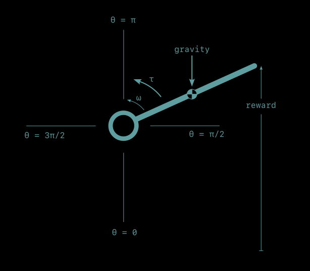

A story about a reinforcement learning approach learning to make a pendulum stand up straight, while making very few assumptions.
tl;dr
This is a demonstration of an RL approach that uses a combination of new tools to control a simulated pendulum:
- BucketTree to learn a discretization of the pendulum’s continuous state variables, angle and angular velocity,
- Ziptie to bundle the discretized values into discrete states,
- Fuzzy Naive Cartographer (FNC) to learn common state-action-state sequences and to make conditional predictions of reward for each action.
It all runs in Myrtle, a real-time reinforcement learning workbench.
This approach requires only a little domain specific design and makes very few assumptions about its world.
The game: Inverting a pendulum
The goal of this work was to demonstrate a new method, not to top a leaderboard or solve a previously unsolved problem. Demonstrating a method is best done on a simple, familiar task where successful behavior is obvious and any deviations from that are similarly obvious and straightforward to dissect.
The playing field here is a pendulum. Imagine holding a broomstick by its one end. The goal is to invert the pendulum—to get it to stand straight up and stay there.

This is different from the popular cart-pole task where the base of the pendulum slides back and forth on a rail. This post considers a fixed-based pendulum, a straight arm with a pinned shoulder.
Physics
The physical representation of the pendulum is simplistic. The arm has uniform mass. It has a small amount of rotational friction, proportional to its speed. And gravity acts on the pendulum's center of mass, pulling it downward.
As always, the canonical source of information is the code itself.
Sensors
There are two quantities returned by sensors: pendulum position and rotational speed.
Position, θ, is measured in radians, zero when pointing straight down, θ = π/2 when pointing to the right, $theta = π when pointing upward, and continuing around to almost 2π when it reaches the bottom again and resets to 0.
Angular speed, ω, is measured in radians per second. Positive angular speed is counter-clockwise (the direction of increasing position) and negative speed is clockwise.
Actions
Actions take the form of torque, τ, applied to the base of the pendulum. Positive torque accelerates the pendulum counter-clockwise, in the direction of increasing position. Negative torque accelerates it in the clockwise direction.
Actions are discrete in time. Each action is a constant torque that lasts for 1/8 second.
There are 13 discrete values the torque can take, 6 positive, 6 negative, and zero. Possible torque values are distributed nonuniformly across the range, with the middle half of the range having denser coverage. This results in a finer grained representation of small torques, useful for making fine-tuning adjustments.
Reward
The pendulum returns reward, r, related to how high the its swinging end reaches, its vertical distance from its straight down θ = 0 position. It reaches a maximum of r = 2 at the straight up θ = π position. A successful learning curve will work its way up to 2 and stay close to it.
Cheat mode: Servo
We can skip every hard and interesting part of this problem by using a servo, a motor and controller that take a desired position and drive the pendulum arm directly to it. It hides the problem from us. Instead of taking torque as an input and generating motion as an output, a servo allows us to provide the final answer, and then tells us not to look behind the curtain while it solves the problem for us. This is usually done by gearing the drive motor down so far that the pendulum dynamics become easy to ignore or by implementing some kind of controller in a black box.
The servo solution is worth mentioning because it's common. When working with a machine that’s big enough to hurt when it hits you, it’s nice to know exactly where it’s going to be and when. This is one of the reasons that reinforcement learning is not frequently used in robots. (But also something I would love to change.)
Level 1: Bang-bang control
One of the most straightforward ways to control a pendulum is to sense whether it is to the right or to the left of its desired position and apply the maximum torque the other direction. For some systems this works remarkable remarkably well. It’s also straightforward to implement. There’s no math other than a comparison with the desired position.
Bang-bang control does require knowing a fair amount about your system, though.
- It requires knowing which position is the desired position. In a pendulum, the connection between position and reward is clear, but in real systems, it can be quite complex. In robots, it’s likely to involve the positions and velocities of many degrees of freedom, and probably their time histories as well.
- It requires knowing how the current state is related to the goal state In the pendulum, it’s obvious that θ greater than π is past the goal in the counterclockwise direction while θ less than π is past the goal in the clockwise direction. The relationship of every pendulum position to the goal is straightforward. This isn’t always the case. Driving through the crisscross of one-way streets that is downtown Boston demonstrates how the appearance of being close to a goal may not reflect the realities. The distance as the crow flies is only very loosely related to the actual driving distance, which itself is only a very approximate approximately connected to the drive time.
- It requires knowning which action will drive the system closer to its goal. Again in the pendulum this is obvious, but even in systems with two degress of freedom the connection becomes less obvious quickly. Assuming that we know which actions drive a system to its goal is a big assumption.
Bang-bang control in a pendulum, while effective, only works because it allows us to build in a lot of implicit knowledge about how a pendulum works.
Level 2: PD control
Bang-bang control is inelegant. When driving a car, bang bang control would be having the accelerator fully depressed until you reach your destination, at which point you instantly slam on the brake. It can be hard on your machine and on any humans involved. It can also result in poor performance, overshoot of the goal, and an audible "bang" when actuators switch instantly from full speed ahead to full reverse.
A useful improvement over a bang bang is proportional-derivative (PD) control. It gets around some of the more obnoxious shortcomings of bang-bang control by adjusting its torque appropriately. The further away the pendulum is from the goal, the greater the torque applied to move it back (proportional control). And to help keep it stable, a small torque is added in the direction opposite to that of the pendulum's movement (derivative control). Similar to bang-bang control, PD-control drives the pendulum to its target position, albeit less violently. And like bang-bang control, it requires knowing which pendulum state maps to maximum reward, where pendulum states are relative to each other, and which actions move the pendulum from its current state to the goal state.
Level 3: Q-learning
The difficulty level goes up considerably if we take away knowledge about which position is rewarded, where the current position is in relation to it, and which action will move the system closer to its goal. This is the difficulty level on which Q-learning operates.
Rather than working with continuous angular positions and velocties, Q-learning works with a discretized state representation. Position is chopped into discrete bins, as is velocity. Now, instead of θ being able to take on any real value between 0 and 2π, it has a relatively small number of discrete options to choose from. Similarly with ω. And because there are just a handful of positions and velocities to choose from, we can list every possible combination of them, together with every action that can be taken, in one big table. Then, learning to control the pendulum becomes a task of filling in the tabel - of trying every action n every state a few times and learning what reward tends to occur.
Q-learning is a classical reinforcement learning technique. It relaxes all the assumptions and system knowledge required by PD or bang-bang control.
Level 4: Q-learning with curiosity
Level 5: Model learning FNC
Level 6: Feature learning with Ziptie
Hard mode: Discretization learning with BucketTree
Next level
There are some remaining parts of the system that are either assumed away or hard coded.
Action discretization
Attention
This approach minimizes the amount of problem-specific engineering that needs to be done. It gets closer to the ultimate goal of a domain-agnostic RL agent, a plug-and-play robot brain.